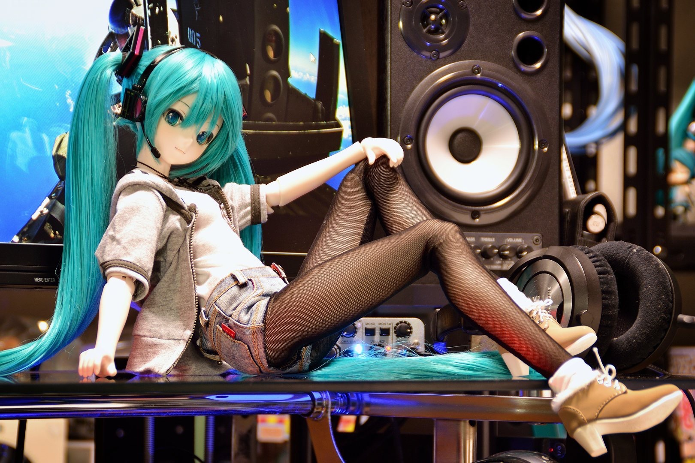
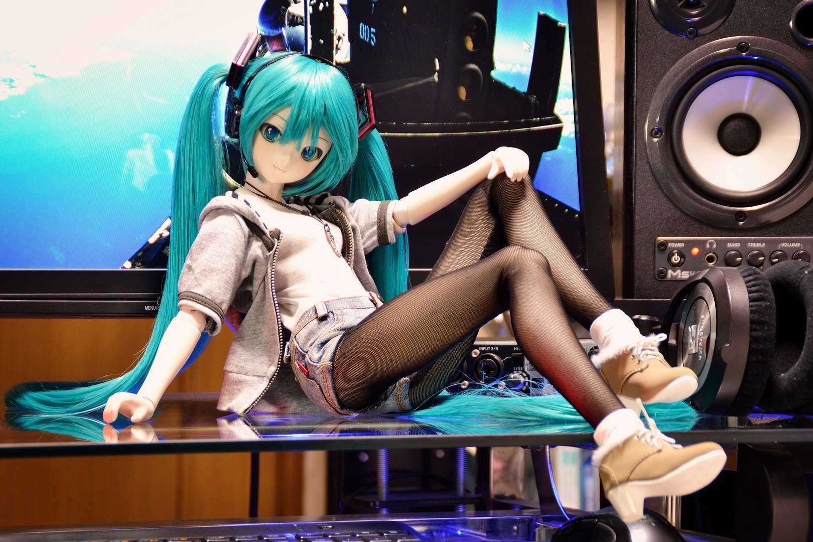
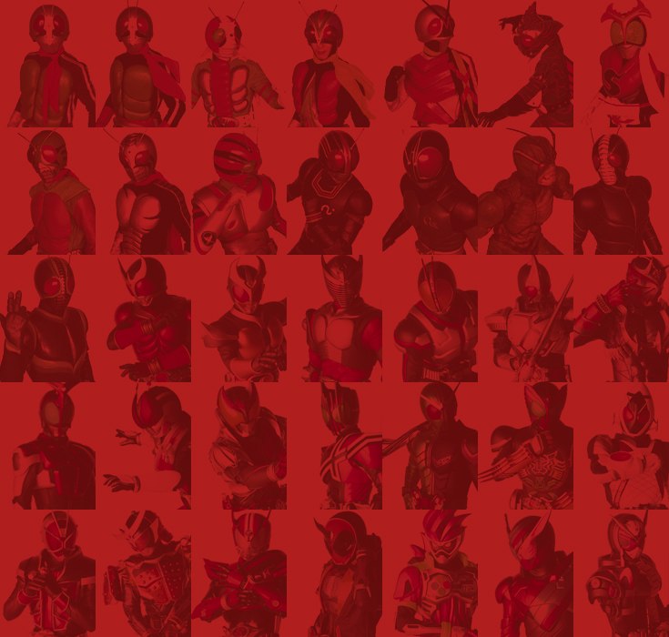

架設環境
MacBook Pro 13寸
home
大概就是相關連結導覽，樸素的首頁
本站使用字體為粉圓字體，字體名稱（jf-openhuninn-1.1）如果字體更新了可以通知我，我會迅速更改
↓支持國產，讚啦！
 字體官網
字體官網
rouze
主要介紹假面騎士劍當中的titan undead，源自本學期（2020年）第一個作業
vtuber
介紹vtuber相關訊息和影片分享，源自本學期第二個作業，做了許多大膽的嘗試，直白來說就是精神污染區，請注意音樂，避免傷耳
video
大概就是其他想放的影片
請依指示，播放非yt影片
資料來源
點擊圖片即可查看圖源網址或教學
來自見彌燁的生日賀圖

個人CUSTOM CAST自創角色

|

|

|

|

|
|---|
kamen rider fandom
![]()
google 恐龍資源，請點選圖片。看影片如何操作

|

|

|

|
|---|
其他雜圖
  偉大的背景圖
其他影音皆來自yt或discord
其他文章來源
↓yt連結 去找吧！我把一切密寶都放在那了！
Copyright©2020, ERIC. All rights reserved.